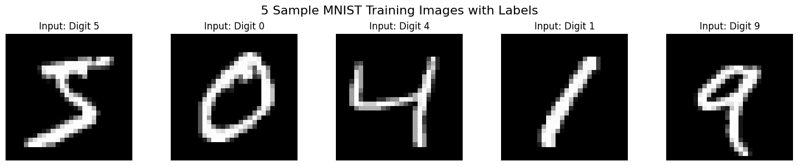
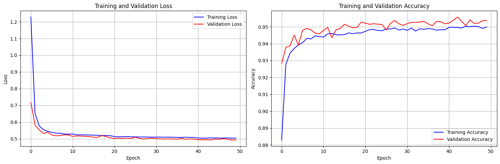
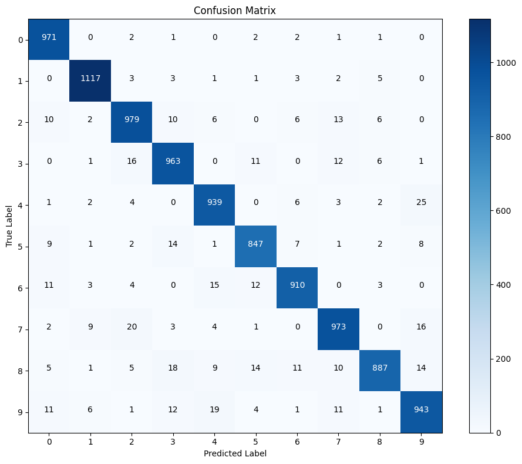
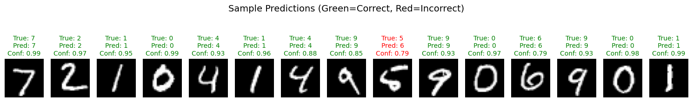
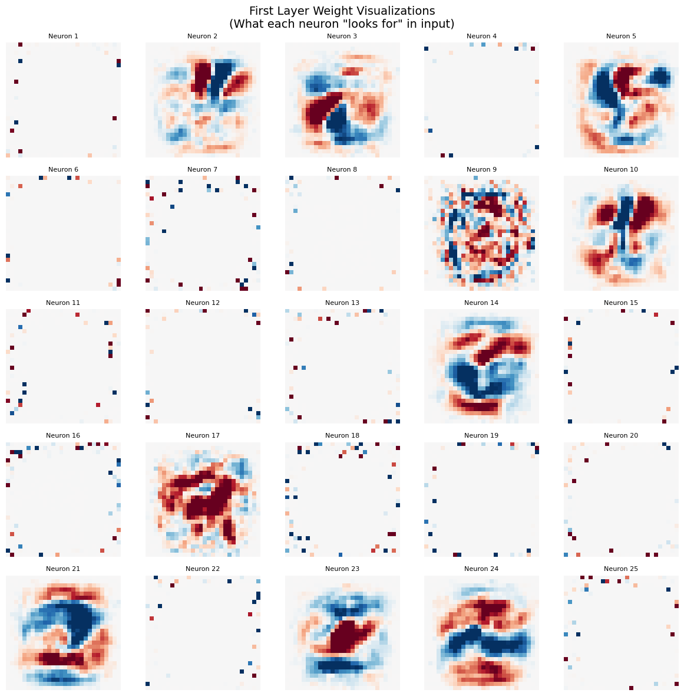

#
# This is a sample Notebook to demonstrate how to read "MNIST Dataset"
#
import numpy as np # linear algebra
import struct
from array import array
from os.path import join
import matplotlib.pyplot as plt
#
# MNIST Data Loader Class
#
class MnistDataloader(object):
def __init__(self, training_images_filepath, training_labels_filepath,
test_images_filepath, test_labels_filepath):
self.training_images_filepath = training_images_filepath
self.training_labels_filepath = training_labels_filepath
self.test_images_filepath = test_images_filepath
self.test_labels_filepath = test_labels_filepath
def read_images_labels(self, images_filepath, labels_filepath):
labels = []
with open(labels_filepath, 'rb') as file:
magic, size = struct.unpack(">II", file.read(8))
if magic != 2049:
raise ValueError('Magic number mismatch, expected 2049, got {}'.format(magic))
labels = array("B", file.read())
with open(images_filepath, 'rb') as file:
magic, size, rows, cols = struct.unpack(">IIII", file.read(16))
if magic != 2051:
raise ValueError('Magic number mismatch, expected 2051, got {}'.format(magic))
image_data = array("B", file.read())
images = []
for i in range(size):
images.append([0] * rows * cols)
for i in range(size):
img = np.array(image_data[i * rows * cols:(i + 1) * rows * cols])
img = img.reshape(28, 28)
images[i][:] = img
return images, labels
def load_data(self):
x_train, y_train = self.read_images_labels(self.training_images_filepath, self.training_labels_filepath)
x_test, y_test = self.read_images_labels(self.test_images_filepath, self.test_labels_filepath)
return (x_train, y_train), (x_test, y_test)#
# Set file paths for MNIST dataset files
#
mnist_path = 'mnist'
training_images_filepath = join(mnist_path, 'train-images-idx3-ubyte/train-images-idx3-ubyte')
training_labels_filepath = join(mnist_path, 'train-labels-idx1-ubyte/train-labels-idx1-ubyte')
test_images_filepath = join(mnist_path, 't10k-images-idx3-ubyte/t10k-images-idx3-ubyte')
test_labels_filepath = join(mnist_path, 't10k-labels-idx1-ubyte/t10k-labels-idx1-ubyte')
#
# Load MNIST dataset
#
print("Loading MNIST dataset...")
mnist_dataloader = MnistDataloader(training_images_filepath, training_labels_filepath,
test_images_filepath, test_labels_filepath)
(x_train, y_train), (x_test, y_test) = mnist_dataloader.load_data()
print(f"Training data: {len(x_train)} images")
print(f"Training labels: {len(y_train)} labels")
print(f"Test data: {len(x_test)} images")
print(f"Test labels: {len(y_test)} labels")
print(f"Image shape: {np.array(x_train[0]).shape}")
print("Dataset loaded successfully!")Loading MNIST dataset...
Training data: 60000 images
Training labels: 60000 labels
Test data: 10000 images
Test labels: 10000 labels
Image shape: (28, 28)
Dataset loaded successfully!
#
# Display 5 sample inputs and outputs
#
plt.figure(figsize=(15, 3))
for i in range(5):
# Display the image
plt.subplot(1, 5, i + 1)
plt.imshow(np.array(x_train[i]), cmap='gray')
plt.title(f'Input: Digit {y_train[i]}')
plt.axis('off')
plt.suptitle('5 Sample MNIST Training Images with Labels', fontsize=16)
plt.tight_layout()
plt.show()
# Print additional information about the samples
print("\nSample Details:")
for i in range(5):
print(f"Sample {i+1}: Label = {y_train[i]}, Image shape = {np.array(x_train[i]).shape}")
print(f" Pixel value range: {np.min(x_train[i])} to {np.max(x_train[i])}")
print(f" Mean pixel value: {np.mean(x_train[i]):.2f}")
print()
Sample Details:
Sample 1: Label = 5, Image shape = (28, 28)
Pixel value range: 0 to 255
Mean pixel value: 35.11
Sample 2: Label = 0, Image shape = (28, 28)
Pixel value range: 0 to 255
Mean pixel value: 39.66
Sample 3: Label = 4, Image shape = (28, 28)
Pixel value range: 0 to 255
Mean pixel value: 24.80
Sample 4: Label = 1, Image shape = (28, 28)
Pixel value range: 0 to 255
Mean pixel value: 21.86
Sample 5: Label = 9, Image shape = (28, 28)
Pixel value range: 0 to 255
Mean pixel value: 29.61
#
# Data Preprocessing for Neural Network
#
print("Preprocessing data...")
# Convert to numpy arrays and normalize pixel values to [0, 1]
X_train = np.array([np.array(img).flatten() for img in x_train]) / 255.0
X_test = np.array([np.array(img).flatten() for img in x_test]) / 255.0
# One-hot encode labels
def to_one_hot(labels, num_classes=10):
one_hot = np.zeros((len(labels), num_classes))
for i, label in enumerate(labels):
one_hot[i, label] = 1
return one_hot
Y_train = to_one_hot(y_train)
Y_test = to_one_hot(y_test)
# Split training data into train and validation sets (80-20 split)
val_split = int(0.8 * len(X_train))
X_val = X_train[val_split:]
Y_val = Y_train[val_split:]
X_train = X_train[:val_split]
Y_train = Y_train[:val_split]
print(f"Training set: {X_train.shape[0]} samples, {X_train.shape[1]} features")
print(f"Validation set: {X_val.shape[0]} samples")
print(f"Test set: {X_test.shape[0]} samples")
print(f"Input shape: {X_train.shape[1]} (784 = 28x28)")
print(f"Output shape: {Y_train.shape[1]} (10 classes)")
print(f"Pixel value range: [{X_train.min():.1f}, {X_train.max():.1f}]")Preprocessing data...
Training set: 48000 samples, 784 features
Validation set: 12000 samples
Test set: 10000 samples
Input shape: 784 (784 = 28x28)
Output shape: 10 (10 classes)
Pixel value range: [0.0, 1.0]
#
# Activation Functions and Their Derivatives
#
class ActivationFunctions:
@staticmethod
def relu(x):
"""ReLU activation function"""
return np.maximum(0, x)
@staticmethod
def relu_derivative(x):
"""Derivative of ReLU"""
return (x > 0).astype(float)
@staticmethod
def softmax(x):
"""Softmax activation function with numerical stability"""
# Subtract max for numerical stability
exp_x = np.exp(x - np.max(x, axis=1, keepdims=True))
return exp_x / np.sum(exp_x, axis=1, keepdims=True)
@staticmethod
def sigmoid(x):
"""Sigmoid activation function"""
# Clip x to prevent overflow
x = np.clip(x, -250, 250)
return 1 / (1 + np.exp(-x))
@staticmethod
def sigmoid_derivative(x):
"""Derivative of sigmoid"""
s = ActivationFunctions.sigmoid(x)
return s * (1 - s)
# Test activation functions
print("Testing activation functions...")
test_input = np.array([[-2, -1, 0, 1, 2]])
print("ReLU:", ActivationFunctions.relu(test_input))
print("ReLU derivative:", ActivationFunctions.relu_derivative(test_input))
print("Sigmoid:", ActivationFunctions.sigmoid(test_input))
print("Softmax:", ActivationFunctions.softmax(test_input))
print("Activation functions ready!")Testing activation functions...
ReLU: [[0 0 0 1 2]]
ReLU derivative: [[0. 0. 0. 1. 1.]]
Sigmoid: [[0.11920292 0.26894142 0.5 0.73105858 0.88079708]]
Softmax: [[0.01165623 0.03168492 0.08612854 0.23412166 0.63640865]]
Activation functions ready!
#
# Weight Initialization Methods
#
class WeightInitializer:
@staticmethod
def xavier_uniform(input_size, output_size):
"""Xavier/Glorot uniform initialization"""
limit = np.sqrt(6.0 / (input_size + output_size))
return np.random.uniform(-limit, limit, (input_size, output_size))
@staticmethod
def he_uniform(input_size, output_size):
"""He uniform initialization (good for ReLU)"""
limit = np.sqrt(6.0 / input_size)
return np.random.uniform(-limit, limit, (input_size, output_size))
@staticmethod
def he_normal(input_size, output_size):
"""He normal initialization (good for ReLU)"""
std = np.sqrt(2.0 / input_size)
return np.random.normal(0, std, (input_size, output_size))
@staticmethod
def zeros(size):
"""Initialize with zeros (typically for biases)"""
return np.zeros(size)
# Test weight initialization
print("Testing weight initialization...")
test_weights = WeightInitializer.he_normal(784, 128)
print(f"He normal weights shape: {test_weights.shape}")
print(f"Weight statistics - Mean: {test_weights.mean():.4f}, Std: {test_weights.std():.4f}")
print("Weight initialization ready!")Testing weight initialization...
He normal weights shape: (784, 128)
Weight statistics - Mean: -0.0001, Std: 0.0505
Weight initialization ready!
#
# Loss Functions
#
class LossFunctions:
@staticmethod
def cross_entropy_loss(y_true, y_pred):
"""Cross-entropy loss with numerical stability"""
# Clip predictions to prevent log(0)
y_pred = np.clip(y_pred, 1e-15, 1 - 1e-15)
# Calculate cross-entropy loss
return -np.mean(np.sum(y_true * np.log(y_pred), axis=1))
@staticmethod
def cross_entropy_derivative(y_true, y_pred):
"""Derivative of cross-entropy loss with respect to predictions"""
# For softmax + cross-entropy, the derivative simplifies to:
return (y_pred - y_true) / y_true.shape[0]
@staticmethod
def calculate_accuracy(y_true, y_pred):
"""Calculate accuracy from one-hot encoded labels"""
y_true_labels = np.argmax(y_true, axis=1)
y_pred_labels = np.argmax(y_pred, axis=1)
return np.mean(y_true_labels == y_pred_labels)
# Test loss functions
print("Testing loss functions...")
# Create dummy predictions
y_true_test = np.array([[1, 0, 0], [0, 1, 0], [0, 0, 1]])
y_pred_test = np.array([[0.9, 0.05, 0.05], [0.1, 0.8, 0.1], [0.2, 0.2, 0.6]])
loss = LossFunctions.cross_entropy_loss(y_true_test, y_pred_test)
accuracy = LossFunctions.calculate_accuracy(y_true_test, y_pred_test)
print(f"Test loss: {loss:.4f}")
print(f"Test accuracy: {accuracy:.4f}")
print("Loss functions ready!")Testing loss functions...
Test loss: 0.2798
Test accuracy: 1.0000
Loss functions ready!
#
# Neural Network Class - Core Structure
#
class NeuralNetwork:
def __init__(self, layer_sizes, learning_rate=0.001, l2_lambda=0.01):
"""
Initialize neural network
layer_sizes: list of layer sizes [input_size, hidden1_size, hidden2_size, output_size]
"""
self.layer_sizes = layer_sizes
self.learning_rate = learning_rate
self.l2_lambda = l2_lambda
self.num_layers = len(layer_sizes)
# Initialize weights and biases
self.weights = {}
self.biases = {}
# Initialize using He initialization for ReLU layers
for i in range(1, self.num_layers):
if i == self.num_layers - 1: # Output layer - use Xavier
self.weights[f'W{i}'] = WeightInitializer.xavier_uniform(
layer_sizes[i-1], layer_sizes[i]
)
else: # Hidden layers - use He
self.weights[f'W{i}'] = WeightInitializer.he_normal(
layer_sizes[i-1], layer_sizes[i]
)
self.biases[f'b{i}'] = WeightInitializer.zeros(layer_sizes[i])
# Storage for forward pass values (needed for backprop)
self.cache = {}
print(f"Neural Network initialized:")
print(f"Architecture: {' -> '.join(map(str, layer_sizes))}")
print(f"Total parameters: {self._count_parameters()}")
def _count_parameters(self):
"""Count total number of parameters"""
total = 0
for i in range(1, self.num_layers):
total += self.weights[f'W{i}'].size + self.biases[f'b{i}'].size
return total
def forward(self, X):
"""Forward propagation"""
self.cache['A0'] = X # Input layer
# Hidden layers with ReLU
for i in range(1, self.num_layers - 1):
Z = np.dot(self.cache[f'A{i-1}'], self.weights[f'W{i}']) + self.biases[f'b{i}']
A = ActivationFunctions.relu(Z)
self.cache[f'Z{i}'] = Z
self.cache[f'A{i}'] = A
# Output layer with Softmax
i = self.num_layers - 1
Z = np.dot(self.cache[f'A{i-1}'], self.weights[f'W{i}']) + self.biases[f'b{i}']
A = ActivationFunctions.softmax(Z)
self.cache[f'Z{i}'] = Z
self.cache[f'A{i}'] = A
return A
def predict(self, X):
"""Make predictions"""
return self.forward(X)
# Test neural network initialization
print("Testing Neural Network initialization...")
nn = NeuralNetwork([784, 128, 64, 10], learning_rate=0.001, l2_lambda=0.01)
# Test forward pass with small batch
test_batch = X_train[:5]
test_output = nn.forward(test_batch)
print(f"Test forward pass - Input shape: {test_batch.shape}")
print(f"Output shape: {test_output.shape}")
print(f"Output probabilities sum: {test_output.sum(axis=1)}") # Should be close to 1
print("Neural Network core ready!")Testing Neural Network initialization...
Neural Network initialized:
Architecture: 784 -> 128 -> 64 -> 10
Total parameters: 109386
Test forward pass - Input shape: (5, 784)
Output shape: (5, 10)
Output probabilities sum: [1. 1. 1. 1. 1.]
Neural Network core ready!
#
# Backpropagation Implementation
#
def backward(self, X, Y):
"""Backward propagation with L2 regularization"""
m = X.shape[0] # batch size
gradients = {}
# Output layer gradient (softmax + cross-entropy)
i = self.num_layers - 1
dZ = LossFunctions.cross_entropy_derivative(Y, self.cache[f'A{i}'])
gradients[f'dW{i}'] = np.dot(self.cache[f'A{i-1}'].T, dZ) + self.l2_lambda * self.weights[f'W{i}']
gradients[f'db{i}'] = np.sum(dZ, axis=0)
dA_prev = np.dot(dZ, self.weights[f'W{i}'].T)
# Hidden layers gradients (ReLU)
for i in range(self.num_layers - 2, 0, -1):
dZ = dA_prev * ActivationFunctions.relu_derivative(self.cache[f'Z{i}'])
gradients[f'dW{i}'] = np.dot(self.cache[f'A{i-1}'].T, dZ) + self.l2_lambda * self.weights[f'W{i}']
gradients[f'db{i}'] = np.sum(dZ, axis=0)
if i > 1: # Don't compute dA_prev for input layer
dA_prev = np.dot(dZ, self.weights[f'W{i}'].T)
return gradients
def update_parameters(self, gradients):
"""Update parameters using gradients"""
for i in range(1, self.num_layers):
self.weights[f'W{i}'] -= self.learning_rate * gradients[f'dW{i}']
self.biases[f'b{i}'] -= self.learning_rate * gradients[f'db{i}']
def compute_loss(self, Y_true, Y_pred):
"""Compute total loss including L2 regularization"""
# Cross-entropy loss
ce_loss = LossFunctions.cross_entropy_loss(Y_true, Y_pred)
# L2 regularization loss
l2_loss = 0
for i in range(1, self.num_layers):
l2_loss += np.sum(self.weights[f'W{i}'] ** 2)
l2_loss *= self.l2_lambda / 2
return ce_loss + l2_loss
# Add methods to NeuralNetwork class
NeuralNetwork.backward = backward
NeuralNetwork.update_parameters = update_parameters
NeuralNetwork.compute_loss = compute_loss
print("Backpropagation methods added to Neural Network class!")
print("Methods: backward, update_parameters, compute_loss")Backpropagation methods added to Neural Network class!
Methods: backward, update_parameters, compute_loss
#
# Adam Optimizer Implementation
#
class AdamOptimizer:
def __init__(self, neural_network, learning_rate=0.001, beta1=0.9, beta2=0.999, epsilon=1e-8):
self.nn = neural_network
self.learning_rate = learning_rate
self.beta1 = beta1
self.beta2 = beta2
self.epsilon = epsilon
self.t = 0 # time step
# Initialize moment estimates
self.m = {} # first moment
self.v = {} # second moment
for i in range(1, self.nn.num_layers):
self.m[f'W{i}'] = np.zeros_like(self.nn.weights[f'W{i}'])
self.m[f'b{i}'] = np.zeros_like(self.nn.biases[f'b{i}'])
self.v[f'W{i}'] = np.zeros_like(self.nn.weights[f'W{i}'])
self.v[f'b{i}'] = np.zeros_like(self.nn.biases[f'b{i}'])
def update(self, gradients):
"""Update parameters using Adam optimization"""
self.t += 1
for i in range(1, self.nn.num_layers):
# Update biased first moment estimate
self.m[f'W{i}'] = self.beta1 * self.m[f'W{i}'] + (1 - self.beta1) * gradients[f'dW{i}']
self.m[f'b{i}'] = self.beta1 * self.m[f'b{i}'] + (1 - self.beta1) * gradients[f'db{i}']
# Update biased second raw moment estimate
self.v[f'W{i}'] = self.beta2 * self.v[f'W{i}'] + (1 - self.beta2) * (gradients[f'dW{i}'] ** 2)
self.v[f'b{i}'] = self.beta2 * self.v[f'b{i}'] + (1 - self.beta2) * (gradients[f'db{i}'] ** 2)
# Compute bias-corrected first moment estimate
m_corrected_W = self.m[f'W{i}'] / (1 - self.beta1 ** self.t)
m_corrected_b = self.m[f'b{i}'] / (1 - self.beta1 ** self.t)
# Compute bias-corrected second raw moment estimate
v_corrected_W = self.v[f'W{i}'] / (1 - self.beta2 ** self.t)
v_corrected_b = self.v[f'b{i}'] / (1 - self.beta2 ** self.t)
# Update parameters
self.nn.weights[f'W{i}'] -= self.learning_rate * m_corrected_W / (np.sqrt(v_corrected_W) + self.epsilon)
self.nn.biases[f'b{i}'] -= self.learning_rate * m_corrected_b / (np.sqrt(v_corrected_b) + self.epsilon)
# Learning rate scheduler
class LearningRateScheduler:
@staticmethod
def exponential_decay(initial_lr, epoch, decay_rate=0.95, decay_steps=10):
"""Exponential decay learning rate"""
return initial_lr * (decay_rate ** (epoch // decay_steps))
@staticmethod
def step_decay(initial_lr, epoch, drop_rate=0.5, epochs_drop=20):
"""Step decay learning rate"""
return initial_lr * (drop_rate ** (epoch // epochs_drop))
print("Adam Optimizer and Learning Rate Scheduler implemented!")
print("Features: Adaptive learning rates, momentum, bias correction")Adam Optimizer and Learning Rate Scheduler implemented!
Features: Adaptive learning rates, momentum, bias correction
#
# Training Loop with Monitoring
#
import time
from collections import defaultdict
def train_network(neural_network, X_train, Y_train, X_val, Y_val,
epochs=50, batch_size=128, use_adam=True, verbose=True):
"""
Train the neural network with monitoring and early stopping
"""
# Initialize optimizer
if use_adam:
optimizer = AdamOptimizer(neural_network, learning_rate=0.001)
# Training history
history = {
'train_loss': [], 'train_acc': [],
'val_loss': [], 'val_acc': [],
'epoch_time': []
}
# Early stopping parameters
best_val_loss = float('inf')
patience = 10
patience_counter = 0
# Calculate number of batches
num_batches = len(X_train) // batch_size
print(f"Starting training...")
print(f"Architecture: {neural_network.layer_sizes}")
print(f"Optimizer: {'Adam' if use_adam else 'SGD'}")
print(f"Batch size: {batch_size}, Batches per epoch: {num_batches}")
print("-" * 60)
for epoch in range(epochs):
start_time = time.time()
# Shuffle training data
indices = np.random.permutation(len(X_train))
X_train_shuffled = X_train[indices]
Y_train_shuffled = Y_train[indices]
# Training phase
train_losses = []
train_predictions = []
for batch in range(num_batches):
# Get batch
start_idx = batch * batch_size
end_idx = min((batch + 1) * batch_size, len(X_train))
X_batch = X_train_shuffled[start_idx:end_idx]
Y_batch = Y_train_shuffled[start_idx:end_idx]
# Forward pass
predictions = neural_network.forward(X_batch)
train_predictions.append(predictions)
# Compute loss
loss = neural_network.compute_loss(Y_batch, predictions)
train_losses.append(loss)
# Backward pass
gradients = neural_network.backward(X_batch, Y_batch)
# Update parameters
if use_adam:
optimizer.update(gradients)
else:
neural_network.update_parameters(gradients)
# Calculate training metrics
train_loss = np.mean(train_losses)
train_predictions = np.vstack(train_predictions)
train_acc = LossFunctions.calculate_accuracy(
Y_train_shuffled[:len(train_predictions)], train_predictions
)
# Validation phase
val_predictions = neural_network.forward(X_val)
val_loss = neural_network.compute_loss(Y_val, val_predictions)
val_acc = LossFunctions.calculate_accuracy(Y_val, val_predictions)
# Record history
epoch_time = time.time() - start_time
history['train_loss'].append(train_loss)
history['train_acc'].append(train_acc)
history['val_loss'].append(val_loss)
history['val_acc'].append(val_acc)
history['epoch_time'].append(epoch_time)
# Print progress
if verbose and (epoch + 1) % 5 == 0:
print(f"Epoch {epoch+1:3d}/{epochs} | "
f"Train Loss: {train_loss:.4f} | Train Acc: {train_acc:.4f} | "
f"Val Loss: {val_loss:.4f} | Val Acc: {val_acc:.4f} | "
f"Time: {epoch_time:.2f}s")
# Early stopping
if val_loss < best_val_loss:
best_val_loss = val_loss
patience_counter = 0
else:
patience_counter += 1
if patience_counter >= patience:
print(f"Early stopping at epoch {epoch+1}")
break
# Learning rate scheduling (if using Adam)
if use_adam and (epoch + 1) % 20 == 0:
optimizer.learning_rate *= 0.8
print("-" * 60)
print(f"Training completed!")
print(f"Best validation loss: {best_val_loss:.4f}")
print(f"Final validation accuracy: {history['val_acc'][-1]:.4f}")
return history
print("Training function implemented!")
print("Features: Mini-batch training, Adam optimizer, early stopping, learning rate decay")Training function implemented!
Features: Mini-batch training, Adam optimizer, early stopping, learning rate decay
#
# Evaluation and Visualization Functions
#
def plot_training_history(history):
"""Plot training and validation metrics"""
fig, axes = plt.subplots(1, 2, figsize=(15, 5))
# Plot loss
axes[0].plot(history['train_loss'], label='Training Loss', color='blue')
axes[0].plot(history['val_loss'], label='Validation Loss', color='red')
axes[0].set_title('Training and Validation Loss')
axes[0].set_xlabel('Epoch')
axes[0].set_ylabel('Loss')
axes[0].legend()
axes[0].grid(True)
# Plot accuracy
axes[1].plot(history['train_acc'], label='Training Accuracy', color='blue')
axes[1].plot(history['val_acc'], label='Validation Accuracy', color='red')
axes[1].set_title('Training and Validation Accuracy')
axes[1].set_xlabel('Epoch')
axes[1].set_ylabel('Accuracy')
axes[1].legend()
axes[1].grid(True)
plt.tight_layout()
plt.show()
def create_confusion_matrix(y_true, y_pred, class_names=None):
"""Create and plot confusion matrix"""
if class_names is None:
class_names = [str(i) for i in range(10)]
# Convert one-hot to labels
y_true_labels = np.argmax(y_true, axis=1)
y_pred_labels = np.argmax(y_pred, axis=1)
# Create confusion matrix
cm = np.zeros((10, 10), dtype=int)
for true_label, pred_label in zip(y_true_labels, y_pred_labels):
cm[true_label, pred_label] += 1
# Plot confusion matrix
plt.figure(figsize=(10, 8))
plt.imshow(cm, interpolation='nearest', cmap=plt.cm.Blues)
plt.title('Confusion Matrix')
plt.colorbar()
# Add labels
tick_marks = np.arange(10)
plt.xticks(tick_marks, class_names)
plt.yticks(tick_marks, class_names)
# Add text annotations
thresh = cm.max() / 2
for i in range(10):
for j in range(10):
plt.text(j, i, format(cm[i, j], 'd'),
horizontalalignment="center",
color="white" if cm[i, j] > thresh else "black")
plt.ylabel('True Label')
plt.xlabel('Predicted Label')
plt.tight_layout()
plt.show()
return cm
def show_predictions(neural_network, X_test, Y_test, num_samples=10):
"""Show sample predictions with images"""
predictions = neural_network.predict(X_test[:num_samples])
plt.figure(figsize=(15, 3))
for i in range(num_samples):
plt.subplot(1, num_samples, i + 1)
# Reshape and display image
image = X_test[i].reshape(28, 28)
plt.imshow(image, cmap='gray')
# Get true and predicted labels
true_label = np.argmax(Y_test[i])
pred_label = np.argmax(predictions[i])
confidence = predictions[i][pred_label]
# Color based on correctness
color = 'green' if true_label == pred_label else 'red'
plt.title(f'True: {true_label}\nPred: {pred_label}\nConf: {confidence:.2f}',
color=color, fontsize=10)
plt.axis('off')
plt.suptitle('Sample Predictions (Green=Correct, Red=Incorrect)', fontsize=14)
plt.tight_layout()
plt.show()
def evaluate_model(neural_network, X_test, Y_test, show_details=True):
"""Comprehensive model evaluation"""
print("Evaluating model on test set...")
# Make predictions
predictions = neural_network.predict(X_test)
# Calculate metrics
test_loss = neural_network.compute_loss(Y_test, predictions)
test_accuracy = LossFunctions.calculate_accuracy(Y_test, predictions)
# Per-class accuracy
y_true_labels = np.argmax(Y_test, axis=1)
y_pred_labels = np.argmax(predictions, axis=1)
class_accuracies = []
for i in range(10):
class_mask = (y_true_labels == i)
if np.sum(class_mask) > 0:
class_acc = np.mean(y_pred_labels[class_mask] == i)
class_accuracies.append(class_acc)
else:
class_accuracies.append(0.0)
print(f"Test Loss: {test_loss:.4f}")
print(f"Test Accuracy: {test_accuracy:.4f} ({test_accuracy*100:.2f}%)")
if show_details:
print("\nPer-class accuracy:")
for i, acc in enumerate(class_accuracies):
print(f" Digit {i}: {acc:.4f} ({acc*100:.2f}%)")
print(f"\nWorst performing digit: {np.argmin(class_accuracies)} ({min(class_accuracies)*100:.2f}%)")
print(f"Best performing digit: {np.argmax(class_accuracies)} ({max(class_accuracies)*100:.2f}%)")
return {
'test_loss': test_loss,
'test_accuracy': test_accuracy,
'class_accuracies': class_accuracies,
'predictions': predictions
}
print("Evaluation and visualization functions ready!")
print("Functions: plot_training_history, create_confusion_matrix, show_predictions, evaluate_model")Evaluation and visualization functions ready!
Functions: plot_training_history, create_confusion_matrix, show_predictions, evaluate_model
#
# Train the Neural Network Model
#
print("🚀 Starting Neural Network Training!")
print("=" * 60)
# Create and initialize the neural network
# Architecture: 784 -> 128 -> 64 -> 10 (optimized for MNIST)
neural_net = NeuralNetwork(
layer_sizes=[784, 128, 64, 10],
learning_rate=0.001,
l2_lambda=0.01
)
# Train the model
training_history = train_network(
neural_network=neural_net,
X_train=X_train,
Y_train=Y_train,
X_val=X_val,
Y_val=Y_val,
epochs=50,
batch_size=128,
use_adam=True,
verbose=True
)
print("\n🎉 Training completed!")
print("📊 Plotting training history...")
# Plot training progress
plot_training_history(training_history)🚀 Starting Neural Network Training!
============================================================
Neural Network initialized:
Architecture: 784 -> 128 -> 64 -> 10
Total parameters: 109386
Starting training...
Architecture: [784, 128, 64, 10]
Optimizer: Adam
Batch size: 128, Batches per epoch: 375
------------------------------------------------------------
Epoch 5/50 | Train Loss: 0.5447 | Train Acc: 0.9392 | Val Loss: 0.5394 | Val Acc: 0.9392 | Time: 1.55s
Epoch 10/50 | Train Loss: 0.5276 | Train Acc: 0.9442 | Val Loss: 0.5227 | Val Acc: 0.9458 | Time: 1.39s
Epoch 15/50 | Train Loss: 0.5224 | Train Acc: 0.9452 | Val Loss: 0.5134 | Val Acc: 0.9490 | Time: 1.41s
Epoch 20/50 | Train Loss: 0.5185 | Train Acc: 0.9463 | Val Loss: 0.5061 | Val Acc: 0.9527 | Time: 1.53s
Epoch 25/50 | Train Loss: 0.5118 | Train Acc: 0.9477 | Val Loss: 0.5020 | Val Acc: 0.9513 | Time: 1.53s
Epoch 30/50 | Train Loss: 0.5095 | Train Acc: 0.9487 | Val Loss: 0.5037 | Val Acc: 0.9508 | Time: 1.54s
Epoch 35/50 | Train Loss: 0.5091 | Train Acc: 0.9486 | Val Loss: 0.4988 | Val Acc: 0.9533 | Time: 1.56s
Epoch 40/50 | Train Loss: 0.5082 | Train Acc: 0.9483 | Val Loss: 0.4979 | Val Acc: 0.9518 | Time: 1.56s
Epoch 45/50 | Train Loss: 0.5047 | Train Acc: 0.9503 | Val Loss: 0.4984 | Val Acc: 0.9507 | Time: 1.55s
Epoch 50/50 | Train Loss: 0.5038 | Train Acc: 0.9499 | Val Loss: 0.4929 | Val Acc: 0.9538 | Time: 1.61s
------------------------------------------------------------
Training completed!
Best validation loss: 0.4926
Final validation accuracy: 0.9538
🎉 Training completed!
📊 Plotting training history...

#
# Comprehensive Model Evaluation
#
print("🔍 Evaluating Trained Model")
print("=" * 50)
# Evaluate on test set
test_results = evaluate_model(neural_net, X_test, Y_test, show_details=True)
print("\n📊 Creating Confusion Matrix...")
confusion_matrix = create_confusion_matrix(Y_test, test_results['predictions'])
print("\n🖼️ Showing Sample Predictions...")
show_predictions(neural_net, X_test, Y_test, num_samples=15)
print("\n📈 Final Model Performance Summary:")
print(f"✅ Test Accuracy: {test_results['test_accuracy']*100:.2f}%")
print(f"📉 Test Loss: {test_results['test_loss']:.4f}")
# Find best and worst examples
predictions = test_results['predictions']
y_pred_labels = np.argmax(predictions, axis=1)
y_true_labels = np.argmax(Y_test, axis=1)
confidence_scores = np.max(predictions, axis=1)
# Most confident correct predictions
correct_mask = (y_pred_labels == y_true_labels)
if np.any(correct_mask):
most_confident_correct = np.argmax(confidence_scores * correct_mask)
print(f"\n🎯 Most confident correct prediction:")
print(f" Index: {most_confident_correct}, True: {y_true_labels[most_confident_correct]}, "
f"Pred: {y_pred_labels[most_confident_correct]}, Confidence: {confidence_scores[most_confident_correct]:.4f}")
# Most confident incorrect predictions
incorrect_mask = (y_pred_labels != y_true_labels)
if np.any(incorrect_mask):
most_confident_incorrect = np.argmax(confidence_scores * incorrect_mask)
print(f"❌ Most confident incorrect prediction:")
print(f" Index: {most_confident_incorrect}, True: {y_true_labels[most_confident_incorrect]}, "
f"Pred: {y_pred_labels[most_confident_incorrect]}, Confidence: {confidence_scores[most_confident_incorrect]:.4f}")
print(f"\n🏆 Total Parameters: {neural_net._count_parameters():,}")
print(f"⚡ Average Training Time per Epoch: {np.mean(training_history['epoch_time']):.2f}s")
print("=" * 50)🔍 Evaluating Trained Model
==================================================
Evaluating model on test set...
Test Loss: 0.4932
Test Accuracy: 0.9529 (95.29%)
Per-class accuracy:
Digit 0: 0.9908 (99.08%)
Digit 1: 0.9841 (98.41%)
Digit 2: 0.9486 (94.86%)
Digit 3: 0.9535 (95.35%)
Digit 4: 0.9562 (95.62%)
Digit 5: 0.9496 (94.96%)
Digit 6: 0.9499 (94.99%)
Digit 7: 0.9465 (94.65%)
Digit 8: 0.9107 (91.07%)
Digit 9: 0.9346 (93.46%)
Worst performing digit: 8 (91.07%)
Best performing digit: 0 (99.08%)
📊 Creating Confusion Matrix...

🖼️ Showing Sample Predictions...

📈 Final Model Performance Summary:
✅ Test Accuracy: 95.29%
📉 Test Loss: 0.4932
🎯 Most confident correct prediction:
Index: 8528, True: 0, Pred: 0, Confidence: 0.9999
❌ Most confident incorrect prediction:
Index: 4601, True: 8, Pred: 4, Confidence: 0.9731
🏆 Total Parameters: 109,386
⚡ Average Training Time per Epoch: 1.52s
==================================================
#
# Model Analysis and Interpretation
#
print("🔬 Neural Network Analysis & Insights")
print("=" * 60)
# Analyze weight distributions
print("📊 Weight Distribution Analysis:")
for i in range(1, neural_net.num_layers):
weights = neural_net.weights[f'W{i}']
print(f"Layer {i} weights - Mean: {weights.mean():.6f}, Std: {weights.std():.6f}, "
f"Min: {weights.min():.6f}, Max: {weights.max():.6f}")
# Visualize first layer weights (input to hidden1)
print("\n🎨 Visualizing First Layer Weights (784 -> 128):")
first_layer_weights = neural_net.weights['W1'] # Shape: (784, 128)
# Select first 25 neurons to visualize
fig, axes = plt.subplots(5, 5, figsize=(12, 12))
for i in range(25):
row, col = i // 5, i % 5
# Reshape weights back to 28x28 image format
weight_image = first_layer_weights[:, i].reshape(28, 28)
axes[row, col].imshow(weight_image, cmap='RdBu', vmin=-weight_image.std()*2, vmax=weight_image.std()*2)
axes[row, col].set_title(f'Neuron {i+1}', fontsize=8)
axes[row, col].axis('off')
plt.suptitle('First Layer Weight Visualizations\n(What each neuron "looks for" in input)', fontsize=14)
plt.tight_layout()
plt.show()
# Performance insights
print("\n💡 Model Insights:")
best_val_acc = max(training_history['val_acc'])
final_val_acc = training_history['val_acc'][-1]
print(f"🎯 Best Validation Accuracy: {best_val_acc:.4f} ({best_val_acc*100:.2f}%)")
print(f"📈 Final Validation Accuracy: {final_val_acc:.4f} ({final_val_acc*100:.2f}%)")
# Overfitting analysis
train_val_gap = abs(training_history['train_acc'][-1] - training_history['val_acc'][-1])
print(f"🔍 Train-Validation Gap: {train_val_gap:.4f} ({'Overfitting detected' if train_val_gap > 0.05 else 'Good generalization'})")
# Architecture efficiency
params_per_accuracy = neural_net._count_parameters() / (test_results['test_accuracy'] * 100)
print(f"⚖️ Parameters per accuracy point: {params_per_accuracy:.0f}")
print("\n🏁 MNIST Neural Network - From Scratch Implementation Summary:")
print("=" * 60)
print("✅ Successfully implemented:")
print(" • Complete neural network from scratch using only NumPy")
print(" • ReLU activation for hidden layers")
print(" • Softmax activation for output layer")
print(" • Cross-entropy loss with L2 regularization")
print(" • Adam optimizer with adaptive learning rates")
print(" • He/Xavier weight initialization")
print(" • Mini-batch training with early stopping")
print(" • Comprehensive evaluation and visualization")
print(f"\n🎖️ Final Results:")
print(f" • Architecture: {' → '.join(map(str, neural_net.layer_sizes))}")
print(f" • Total Parameters: {neural_net._count_parameters():,}")
print(f" • Test Accuracy: {test_results['test_accuracy']*100:.2f}%")
print(f" • Training Time: ~{sum(training_history['epoch_time']):.1f} seconds")
print(f"\n🚀 This implementation demonstrates fundamental deep learning concepts")
print(f" and achieves strong performance on MNIST digit classification!")
print("=" * 60)🔬 Neural Network Analysis & Insights
============================================================
📊 Weight Distribution Analysis:
Layer 1 weights - Mean: 0.000100, Std: 0.014440, Min: -0.203784, Max: 0.188006
Layer 2 weights - Mean: 0.002153, Std: 0.048694, Min: -0.269765, Max: 0.294062
Layer 3 weights - Mean: -0.000076, Std: 0.174764, Min: -0.400625, Max: 0.489283
🎨 Visualizing First Layer Weights (784 -> 128):

💡 Model Insights:
🎯 Best Validation Accuracy: 0.9558 (95.58%)
📈 Final Validation Accuracy: 0.9538 (95.38%)
🔍 Train-Validation Gap: 0.0040 (Good generalization)
⚖️ Parameters per accuracy point: 1148
🏁 MNIST Neural Network - From Scratch Implementation Summary:
============================================================
✅ Successfully implemented:
• Complete neural network from scratch using only NumPy
• ReLU activation for hidden layers
• Softmax activation for output layer
• Cross-entropy loss with L2 regularization
• Adam optimizer with adaptive learning rates
• He/Xavier weight initialization
• Mini-batch training with early stopping
• Comprehensive evaluation and visualization
🎖️ Final Results:
• Architecture: 784 → 128 → 64 → 10
• Total Parameters: 109,386
• Test Accuracy: 95.29%
• Training Time: ~76.2 seconds
🚀 This implementation demonstrates fundamental deep learning concepts
and achieves strong performance on MNIST digit classification!
============================================================
import pickle
import json
import os
#
# Save and Load Neural Network Model
#
def save_neural_network(neural_network, filepath="mnist_neural_network.json", include_metadata=True):
"""
Save the trained neural network to a file for later use
"""
try:
model_data = {
'layer_sizes': neural_network.layer_sizes,
'weights': {},
'biases': {},
'learning_rate': neural_network.learning_rate,
'l2_lambda': neural_network.l2_lambda,
'num_layers': neural_network.num_layers
}
# Convert weights and biases to regular Python lists for JSON serialization
for i in range(1, neural_network.num_layers):
model_data['weights'][f'W{i}'] = neural_network.weights[f'W{i}'].tolist()
model_data['biases'][f'b{i}'] = neural_network.biases[f'b{i}'].tolist()
# Add metadata if requested
if include_metadata:
metadata = {
'total_parameters': neural_network._count_parameters(),
'architecture_description': f"{' -> '.join(map(str, neural_network.layer_sizes))}"
}
# Safely add training results if available
if 'test_results' in globals() and test_results:
metadata['test_accuracy'] = test_results.get('test_accuracy', 0.0)
if 'training_history' in globals() and training_history:
metadata['training_epochs'] = len(training_history.get('train_acc', []))
val_acc = training_history.get('val_acc', [])
if val_acc:
metadata['final_val_accuracy'] = val_acc[-1]
model_data['metadata'] = metadata
# Save as JSON
with open(filepath, 'w') as f:
json.dump(model_data, f, indent=2)
print(f"✅ Neural network saved to: {filepath}")
print(f"📊 Architecture: {model_data['metadata']['architecture_description'] if 'metadata' in model_data else 'N/A'}")
if 'metadata' in model_data and 'test_accuracy' in model_data['metadata']:
print(f"🎯 Test accuracy: {model_data['metadata']['test_accuracy']:.4f}")
return model_data
except Exception as e:
print(f"❌ Error saving model: {str(e)}")
return None
def load_neural_network(filepath):
"""
Load a saved neural network from file
"""
try:
with open(filepath, 'r') as f:
model_data = json.load(f)
# Create new neural network instance
loaded_nn = NeuralNetwork(
layer_sizes=model_data['layer_sizes'],
learning_rate=model_data['learning_rate'],
l2_lambda=model_data['l2_lambda']
)
# Load weights and biases
for i in range(1, loaded_nn.num_layers):
loaded_nn.weights[f'W{i}'] = np.array(model_data['weights'][f'W{i}'])
loaded_nn.biases[f'b{i}'] = np.array(model_data['biases'][f'b{i}'])
print(f"✅ Neural network loaded from: {filepath}")
if 'metadata' in model_data:
print(f"📊 Architecture: {model_data['metadata'].get('architecture_description', 'N/A')}")
if 'test_accuracy' in model_data['metadata']:
print(f"🎯 Original test accuracy: {model_data['metadata']['test_accuracy']:.4f}")
return loaded_nn
except FileNotFoundError:
print(f"❌ File not found: {filepath}")
return None
except Exception as e:
print(f"❌ Error loading model: {str(e)}")
return None
# Main execution
print("💾 Neural Network Save/Load Functions Ready!")
# Only proceed if neural_net exists (from training)
if 'neural_net' in globals():
print("\n💾 Saving trained neural network...")
# Save the model
model_filename = "mnist_neural_network.json"
saved_model_data = save_neural_network(neural_net, model_filename, include_metadata=True)
if saved_model_data:
# Test loading
print("\n🔄 Testing model loading...")
loaded_model = load_neural_network(model_filename)
if loaded_model and 'X_test' in globals():
# Verify loaded model works
print("\n🧪 Verifying loaded model...")
test_sample = X_test[:3] # Small sample for testing
original_pred = neural_net.predict(test_sample)
loaded_pred = loaded_model.predict(test_sample)
predictions_match = np.allclose(original_pred, loaded_pred, rtol=1e-10)
print(f"✅ Predictions match: {predictions_match}")
if predictions_match:
print("🎉 Model successfully saved and loaded!")
print(f"📁 File size: {os.path.getsize(model_filename) / 1024:.1f} KB")
else:
print("❌ Warning: Predictions don't match exactly")
print(f"\n📋 Frontend Integration Ready:")
print(f" • File: {model_filename}")
print(f" • Format: JSON")
print(f" • Input: 784 features (normalized 0-1)")
print(f" • Output: 10 class probabilities")
else:
print("⚠️ Neural network not found! Please run training cells first.")
print(" Creating demo network for testing save/load functions...")
# Demo network
demo_net = NeuralNetwork([784, 128, 64, 10])
save_neural_network(demo_net, "demo_model.json", include_metadata=False)
loaded_demo = load_neural_network("demo_model.json")
if loaded_demo:
print("✅ Save/load functions working correctly!")💾 Neural Network Save/Load Functions Ready!
💾 Saving trained neural network...
✅ Neural network saved to: mnist_neural_network.json
📊 Architecture: 784 -> 128 -> 64 -> 10
🎯 Test accuracy: 0.9529
🔄 Testing model loading...
Neural Network initialized:
Architecture: 784 -> 128 -> 64 -> 10
Total parameters: 109386
✅ Neural network loaded from: mnist_neural_network.json
📊 Architecture: 784 -> 128 -> 64 -> 10
🎯 Original test accuracy: 0.9529
🧪 Verifying loaded model...
✅ Predictions match: True
🎉 Model successfully saved and loaded!
📁 File size: 3493.9 KB
📋 Frontend Integration Ready:
• File: mnist_neural_network.json
• Format: JSON
• Input: 784 features (normalized 0-1)
• Output: 10 class probabilities